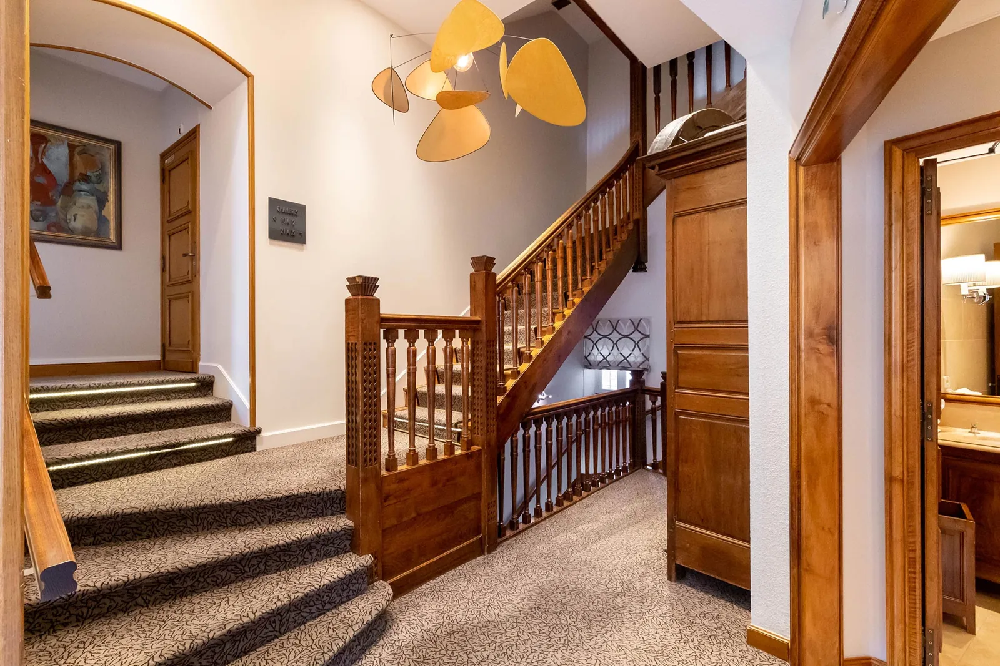
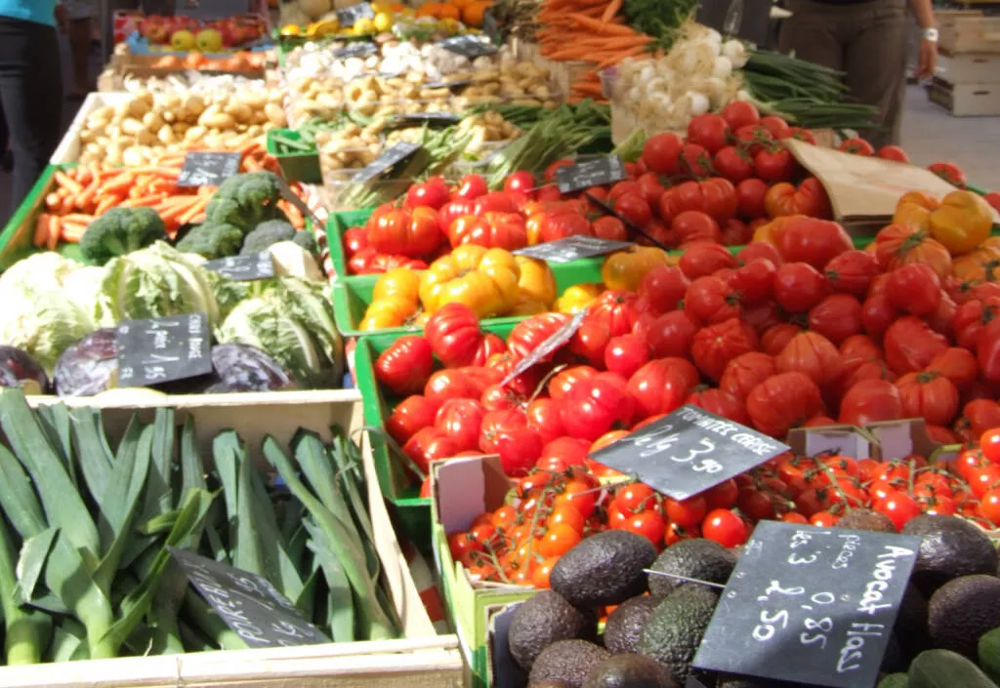

A weekend in Chagny, hour by hour.
The whole trip pivots on one five-hour table at Maison Lameloise. Every other hour — Friday's arrival, Saturday's day-trip, Sunday's slow recovery — is timed backwards from a 20:00 aperitif and an after-midnight last course. Stay walking distance or pre-book the cab.
The keystone: five hours at Maison Lameloise.
Chef Éric Pras's three-star dining room runs the Dégustation menu in a real-world ~five-hour arc — one guest's diary marks 20:00 → 01:00[2]. Lock the table first; build the rest of the weekend around it. The dining room sits at 36 Place d'Armes — pillow within a 12-minute walk if you can, pre-booked Le Taxi Bourguignon if you can't.
Two ways to handle the after-midnight problem.
Stay inside Chagny.
Stay in a wine-village château.
Hour by hour, three days.

Check in on Place d'Armes.
Park the car here for the duration — everything tomorrow morning is within a 30 km radius, and you won't be driving Saturday night. Tea on the terrace, walk the square [3].
Light walk through the old town.
Place d'Armes → Église Saint-Martin → canal path. Optional. The point is to scout tomorrow night's walking route back from dinner so you can do it on autopilot at 01:00.
Brasserie supper — keep tomorrow's appetite.
Resist a Michelin warm-up; you want pacing room for tomorrow's 5-hour menu. A simple plate plus one glass and an early night is the right Friday [12].
Coffee, fruit, one croissant. Stop there.
Heavy breakfast eats into the appetite budget. Bread, fruit, espresso; out by 09:30.
Beaune Saturday market — every Saturday only.
~180 stalls of produce, cheese, charcuterie, organic, plus a March–November flea market on Place Carnot. Runs 7:00–13:00; arrive before noon for stock [17].
Salad-and-a-glass somewhere in Beaune.
Calories budget is still working in your favour. Eat enough to drive home; nothing more [12].
One cellar tour — pick easy.
Patriarche Père & Fils is the safe Saturday default — Burgundy's largest cellar (5 km of 13th-c. galleries), self-guided audio tour with sommelier-poured 6-wine tasting; departures 14:15, 14:45, 15:15, 15:45 [19]. Spit, don't swallow.
Château de La Rochepot.
The polychrome-roof photo in every Burgundy listicle is currently visit-closed; the Cour d'appel de Metz formally confiscated the property in March 2026. Photograph from the road and move on [14].
Drive back. Shower. Lie down.
Hard deadline: be back, showered, hungry by 19:45. Forty-five minutes of horizontal calm now pays off at course six.
Walk it off — or into the pre-booked taxi.
Strategy A: a two-minute walk to Hôtel de la Poste, sleeves loose. Strategy B: Le Taxi Bourguignon at the door; the driver knows the post-Lameloise pattern [8].
Late breakfast. Black coffee. Read.
You earned this. Most Burgundy cellars are closed Sundays anyway — there's no rush [20].

Option A — Chagny's own Sunday market.
The right gentle Sunday for a Lameloise hangover: cheese, charcuterie, a baguette, eat it in the square. No driving. No agenda [21].

Option B — Voie des Vignes e-bike loop.
23 km of vineyard road and bike path between climats — Santenay, Chassagne-Montrachet, Meursault, Volnay, Pommard. E-bikes hire from Santenay. Pack water; lunch in a village [10].
Option C — Patriarche cellar (Sunday-open).
If you missed it on Saturday: self-guided audio + sommelier-poured 6-wine tasting, departures every 30 min from 9:45. The exception that proves the rule that everything else in Beaune is shut [18] [20].
Light lunch. Then leave.
Tagliatelle and a glass somewhere unfussy. Pack up. Hand back the keys. Drive out with the windows down.
Three dates that break the plan.
Lameloise — Tue, Wed, late Aug.
Restaurant closed Tuesdays and Wednesdays year-round, and shut 18 Aug → 2 Sep 2026. Reopens Thursday 3 September. Verify on the official reservation page before booking lodging [13].
La Rochepot — closed all of 2026.
Officially confiscated by the Cour d'appel de Metz on 12 March 2026; AGRASC is running emergency works while awaiting resale. Visit-closed indefinitely [14].
Sundays — most cellars closed.
Burgundy cellars run on a noon-to-2 lunch break and shut on Sunday. Patriarche, Bouchard Aîné, Marché aux Vins and Jaffelin are the Beaune exceptions [20].
The lead-time
checklist.
Six things to lock in, longest lead time at the top. Skip step one and the rest collapses; the table is the anchor everything else hangs on.
- ~6 mo Table at Maison LameloiseDégustation menu, Saturday evening, party size lameloise.fr →
- ~6 mo Room — Strategy A or BLameloise rooms book with the table; satellite châteaux fill fast hotel-lameloise →
- ~2 wk Return taxi (Strategy B only)Pre-book a 01:00 pickup — drivers serve everyone leaving Lameloise at once letaxibourguignon →
- ~1 wk One Beaune cellar tourPatriarche slots fill on Saturday afternoons; book a 14:30 or 15:00 departure patriarche →
- ~1 wk Hospices de Beaune entryWalk-in works, online skips the queue; ~€9.50 audio-guide ticket hospices →
- day-of E-bikes (if Sunday Option B)Santenay trailhead has e-bike rental on summer weekends voie des vignes →
An alternate view of the canonical Scout expedition.
Drawn from the four sub-topics of the parent expedition — walking-distance lodging, character lodging, day-trips, and (separately) tech events. The hour-by-hour scaffold above is a synthesis; the canonical pages carry the comparison detail, the booking-line numbers, and the full source ledger.
The only regional cybersecurity day with national draw is Forum InCyber des Territoires at Le Creusot's Hub & Go, Thu–Fri 11–12 June 2026. Threads neatly into a Saturday-13-June dinner [15].